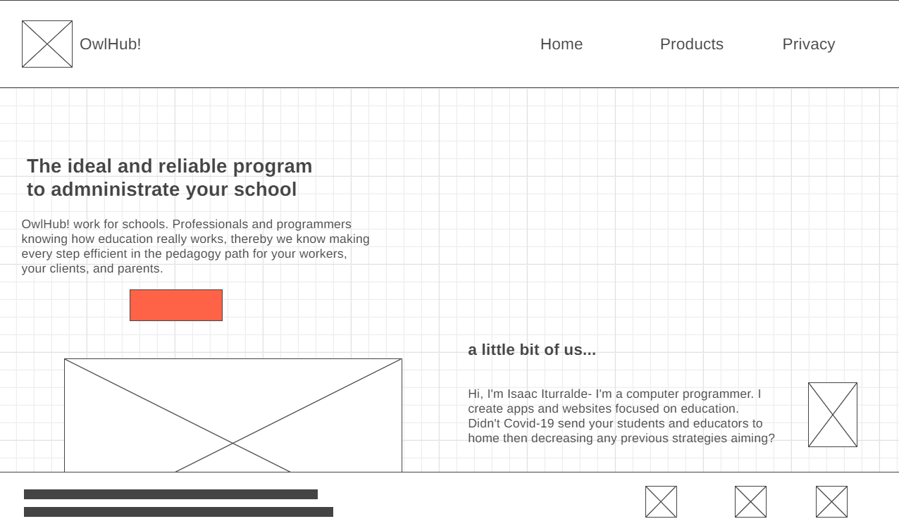
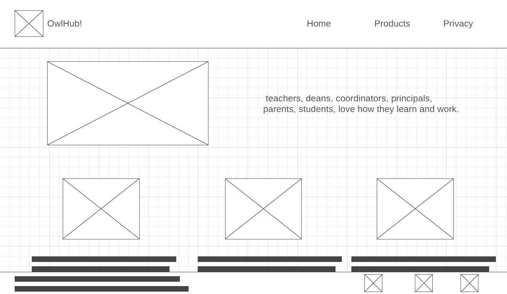
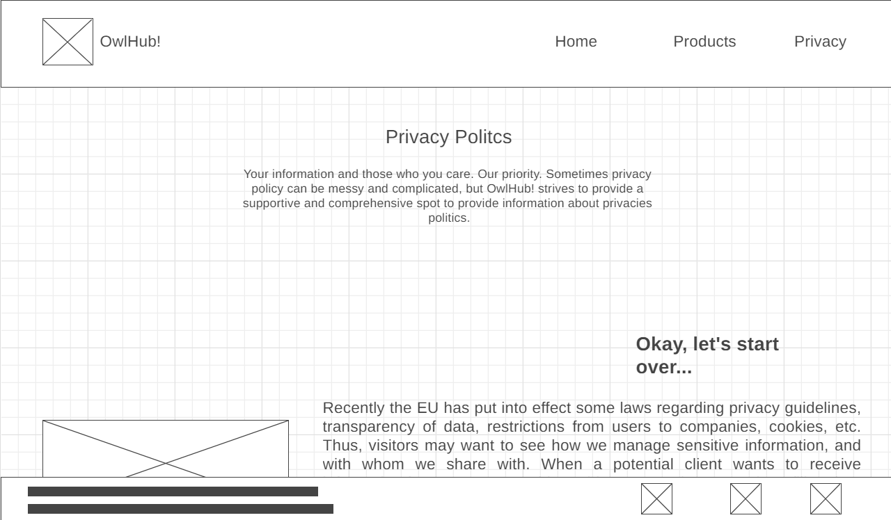

Overview
Purpose
Hi, I'm Isaac Iturralde- I'm a computer programmer. I create apps and websites focused on education. My company work for private schools that are growing rapidly in the local market. Teachers that know how does education really work, including the bureaucracy, and programmers figure in our lines, thereby we know making every step efficient in the pedagogy path for your workers, your clients and parents. Didn't Covid-19 send your students and educators to home then decreasing any previous strategies aiming? With our database, apps and fully customize system you won't only keep your workers and clients happy, but parents will start look for your school. You can google LBS app though. We've just created it for a school in Mexico. What about a call to talk more about this opportunity?
Audience
Made for schools, used by parents and schoolars, loved by teachers, designated to realy.
The ideal and reliable program to admninistrate your school
OwlHub!
Style Guide
Color Palette
Palette URL: https://coolors.co/396e94-e7c24f-a43312-381d2a-aabd8c| Primary | Secondary | Accent 1 | Accent 2 |
|---|---|---|---|
| 396e94 | e7c24f | a43312 |
Typography
Heading Font: Calibri
Paragraph Font: Patrick Hand
Normal paragraph example
OwlHub is a company established since 2021 when the professor in Geography and student of BYU-Idaho Online Isaac Iturralde noticed how hard submiting grades and keeping learning quality was for teachers of the school he was working on at that moment while Covid-19 stunned the whole earth. With an awesome team that were joined time by time they finally sold their very first educational program to some schools in Mexico.
Colored paragraph example
Every program is created according to our clients needs followed by a standarded operations for schools around the USA, Canada and Mexico. Currently we're working on reach the processes of European education systems to provide our services around the globe. Thereby enseuring worldwide feedback providing healthy comparations to a better common world.
Navigation
Site Map
Content
Home page
Welcome to OwlHub! OwlHub is a company established since 2021 when the professor in Geography and student of BYU-Idaho Online Isaac Iturralde noticed how hard submiting grades and keeping learning quality was for teachers of the school he was working on at that moment while Covid-19 stunned the whole earth. With an awesome team that were joined time by time they finally sold their very first educational program to some schools in Mexico. Every program is created according to our clients needs followed by a standarded operations for schools around the USA, Canada and Mexico. Currently we're working on reach the processes of European education systems to provide our services around the globe. Thereby enseuring worldwide feedback providing healthy comparations to a better common world.
Images for the Home page


Privacy
Your information and those who you care, our priority. Recently the EU has put into effect some laws regarding privacy guidelines, transparency of data, restrictions from user to companies, cookies, etc. Thus, visitor may want see how we do manage sensitive information, whom do we share them with. When a potential client wants to receive information from us to contact him or his contacts there must be a fill-up-box to add information like email and phone number, thereby we'll make deals. Some others request from visitors will be testimonies from previous and current clients expressing how effective or ineffective this is for them. You can find them up clicking here http://owlhub.com/about/testimonies/ref/ All the information like real testimonies of use, FAQ, our history, system methodology, etc. Will be open and accessible to everyone without any log-in process. We offer custom webpages and systems as well as apps and platforms therefore, parents may get more accurate information from their children via their respective schools' platforms. We invite you to contact your school website if you're looking for specific information of your beloved one.
Images for the Page 2
Products
Who we are? Like many educational software websites, we are not expecting receiving a lot of visits from everyone. Just a specific kind of people will come to my website such as workers and owners in the education industry and clients of those educational companies like parents and students. Many education sector workers will come my website to take a look upon the tools we offer to our clients. How they have a good impact making easier the bureaucracy within teachers, deans, coordinators and principals will be one of the main recourses to win potential clients. We have set some testimonies from educational services workers to share with everyone how their workload decreases and helped them to focus the most in teaching. Clients such as parents and students will come to see our website just to be curious. Some others will come to see if this system and website is okay for them because they will be interested in enroll their children in schools with this system and website. As I previously mentioned, workers and clients will come to visit this website, they will come perhaps to only see, others will do because they heard something, whether their visit figures as a coincidence or not questions will be rose, some of those questions that may appear are: Questions and answers are sorted by the following: workers, clients. Questions for workers: 1. How does it help me to understand the program and system you guys manage? 2. What are the tools you guys offer me? 3. Will it help me to make my work easier? 4. How can I refer this website and program to my school? Questions for clients: 1. What is the difference between a school without this system and a school with it? 2. Is it really worth to my money due to the school where my children are enrolled paid or pay for this service? 3. I'd like to know who does it work. We're expecting answer to these and many other questions throughout this website, please feel free to see around our incredible material. Do you feel comfortable using this website? This is only one scop of what we do! Visitors will come to this website because friendly front-end design. We'll offer testimonies of people and companies that uses our services. Amazing online service designed to be understood by the little one to the wisest man. We don't make your neurons lazy but encourage them to keep learning. See at these digital books we've just made for one of our first clients. If you're a teacher just take a look at this wonderful way to make online and face-to-face exams. And recently being involved in AI to make a perfect assistant always open to you. http://owlhub.com/about/new-experiences-for-you/
Images for the Page 3
Wireframes
Create three wireframes for your site. One for each page and list them here
Home
this website shows a partial part of the web page it has more information you can find that information above wireframe section to be more specific see at home.
Products
this website shows a partial part of the web page it has more information you can find that information above wireframe section to be more specific see at Products.
Privacy
this website shows a partial part of the web page it has more information you can find that information above wireframe section to be more specific see at privacy.
